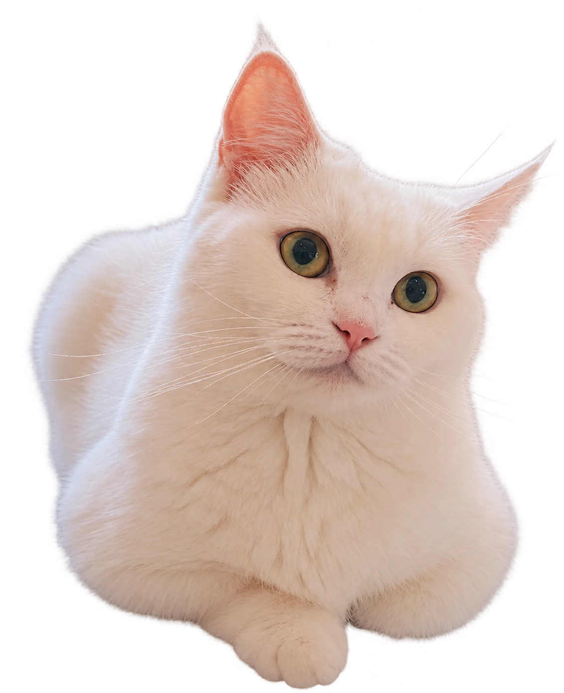
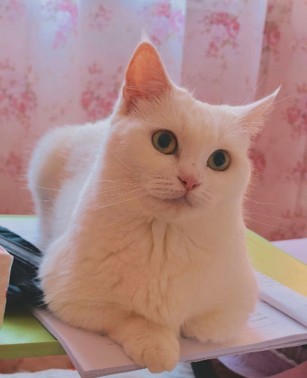

Hi, I’m
YangYu
于洋Master’s Student, Year 2
I study fisheries stock assessment and CPUE standardisation, while learning to make peace with data, code and error messages. The cat in the photo is Baimifan.
Research interests

Master’s Students
Yang Yu
于洋Master’s Student, Year 2
I’m a graduate student learning to live in peace with data, code and all kinds of error messages. My research focuses on fisheries stock assessment and CPUE standardisation. Daily life involves wrestling with data, a love–hate relationship with models, and repeatedly checking whether an unexpected result means something is wrong with the code or with me.
I’m still finding my way in research, learning as I go and working things out through practice. I hope that one day I’ll truly understand my models, and that my models might understand me too.
Please enjoy a cat called Baimifan (plain rice).
中文原文 / Original Chinese
一名正在努力与数据、代码以及各种报错和平共处的研究生。研究方向是渔业资源评估与 CPUE 标准化，日常工作包括和数据斗智斗勇、与模型相爱相杀，以及在结果不符合预期时反复确认究竟是代码出了问题，还是自己出了问题。
目前仍在科研道路上摸索前进，主打一个边学边做、边做边悟。希望有一天能够真正理解自己的模型，也希望模型能够理解自己。
请欣赏一个叫白米饭的猫子
Publications
No publications listed yet.